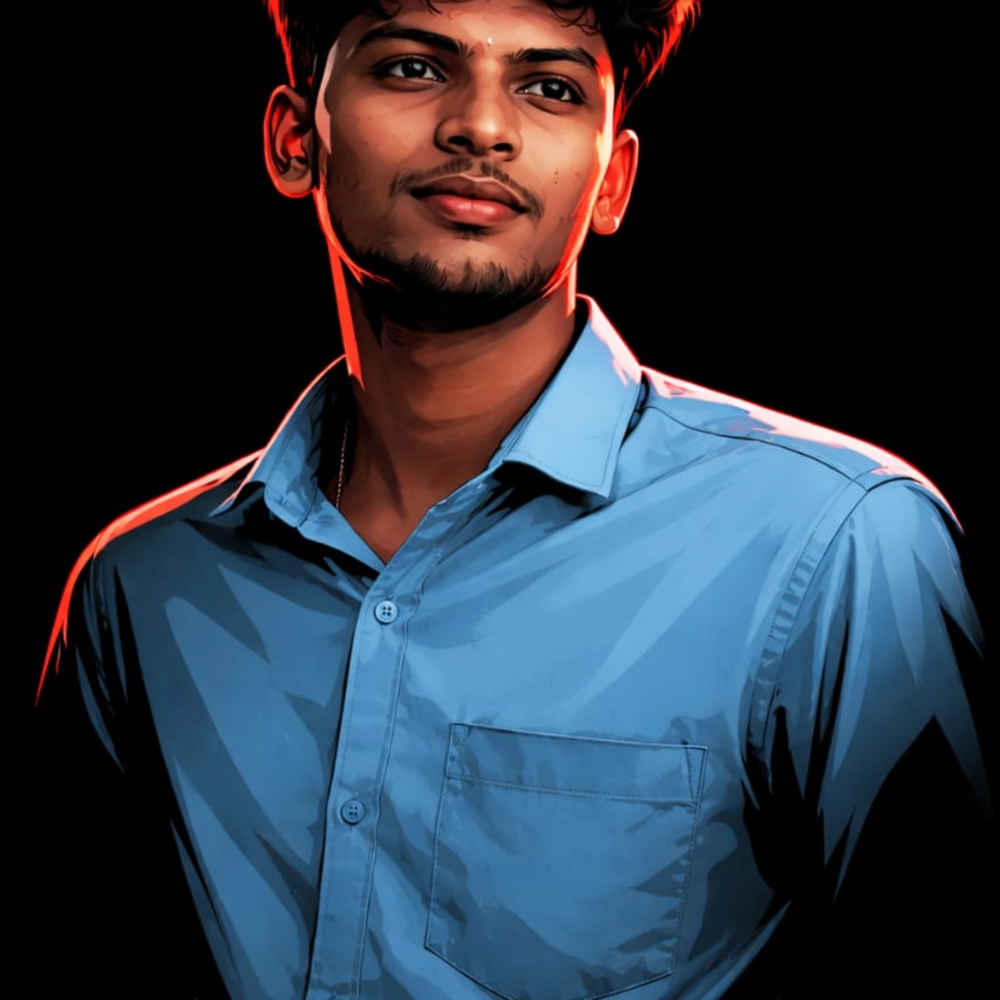

Praneethkumar P
I build projects that use AI, vision and the web to solve everyday problems.
Projects
-
2024
Voice to Sign Language Chatbot
Turns spoken English into matching sign language videos using the WLASL dataset. Speech recognition and language processing sit behind a web interface for real-time accessible communication.
Python, speech recognition, NLP, WLASL -
2024
3D Indoor Navigation System
Guides users to specific rooms inside a building using Blender models, with interactive real-time path visualization.
Blender, 3D modelling, path finding Best Concept Award, Intercollege Techday Competition 2024, ACET -
2025
Smart Attendance System
Captures live video, extracts facial embeddings and matches them against a database for contactless attendance.
Python, face recognition, embeddings 2nd Prize, Intercollege Demoday Competition 2024, ACET -
2026
Complaint Management System
A Flask web app where students submit and track complaints and administrators manage and resolve them.
Flask, Python, SQL
Background
I'm a Computer Science and Business Systems , graduating in 2027. I learn by building, and most of my projects started as a problem I saw around campus.
-
2026
Business Development Executive , Zapluse
Taking a internship training.
-
2025
Data Analytics training, Xplore IT Crops
Industry-oriented training in Python, SQL, Power BI and Excel, covering data analysis, visualization and database management. June to July 2025.
-
2023
B.Tech. Computer Science and Business Systems
Akshaya College of Engineering and Technology. 2023 to 2027.
Skills and certificates
Certified in Database Management System and Python. Completed Harnessing AI for Academic Success. Also took part in Learnathon 2024 and the TN Startup Prototyping Idea Pitching Event 2024.